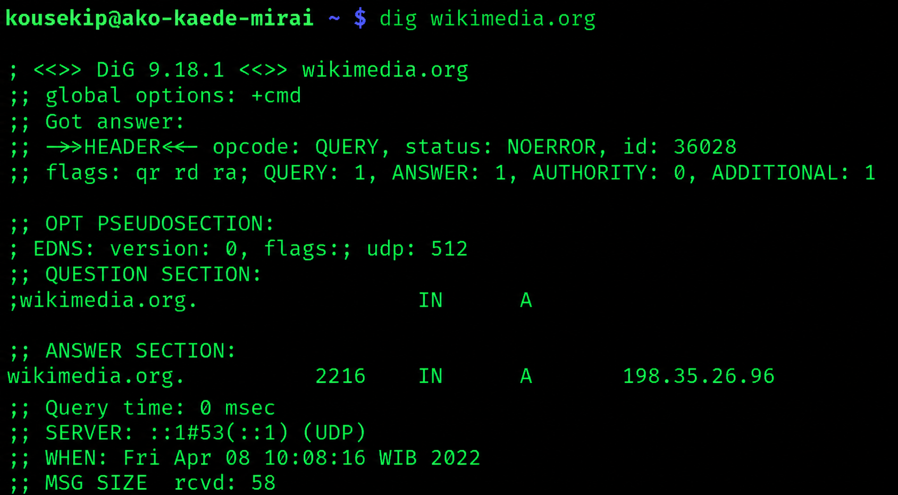

IT 3203 · Project milestone 1
DNS and why the web depends on it
The Domain Name System turns names people can remember into information computers use to reach websites, email, and other Internet services.
Explore how a lookup worksStart with the essentials
DNS is a distributed naming system. Resolvers follow referrals through a hierarchy of servers, then save answers temporarily so repeated requests can be faster.

Contents
- Origins of DNSWhy the Internet moved beyond a shared host file.
- How DNS worksThe hierarchy, servers, records, and lookup path.
- DNS todaySecurity, privacy, and services that depend on DNS.
- The future of DNSNewer records and continuing design challenges.
- Key conceptsSeven terms that make DNS easier to understand.
- References and resourcesStandards, documentation, and learning materials.
- AboutThe student and the project.
Key terms
- Domain name
- A readable label such as example.com.
- Resolver
- The software that finds DNS answers for a device.
- Resource record
- A typed item of DNS data, such as an address or mail server.
At a glance
| Idea | What it means |
|---|---|
| Names | People use domain names instead of memorizing numeric addresses. |
| Delegation | Different organizations manage different parts of the name hierarchy. |
| Caching | Resolvers reuse valid answers for the period set by the record’s TTL. |